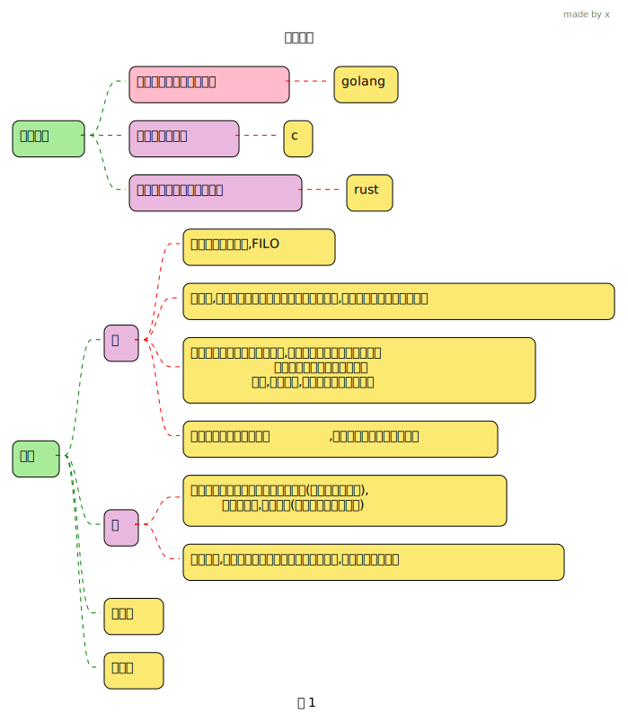
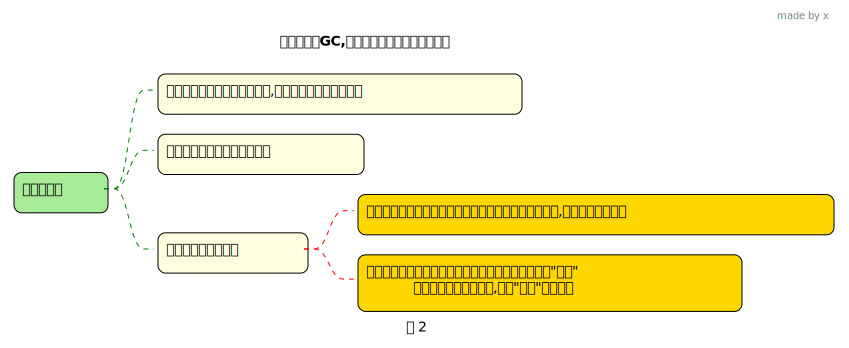
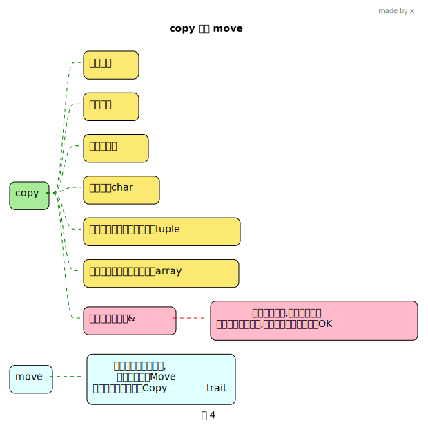
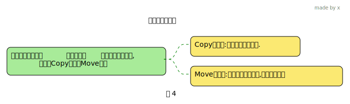

rust 所有权
1 所有权规则
所有权是rust用来管理内存的一系列规则

2 move 语义
fn main() {
let x = 12;
let y = x;
println!("{}", x);
let x = "abc".to_string();
let y = x;
// println!("{}", x);
}
分析一下到底会如何执行
- 先有设计思想(即: 所有权三个规则),然后才去设计代码如何执行, 现在我们根据这个思想看第3行和第7行, 我们推断一下代码的执行
- 因为值只能有一个所有者原则(所有者的概念有一重点,就是只有它可以将
值销毁),所以- 第3行, 因为
x变量内容只在栈上分配,let y=x;会将x的值复制给 y, 就是将x变量存放的内容复制到y变量所在内存上,这个时候有2种选择- 使x失效(表示无法再通过变量x来访问x所在的那块内存), 这样给人感觉 值 12 只有一个所有者了, 给人一种 x “move 移动” y的感觉
- 使x还是有效, 这样2个值都有自己的所有者, 注意这本身就不违反值只有一个所有者(因为是其实是2个不同地方的值了,提醒下所有权规则是为了内存管理,这里的情况就各自管理各自的值, 不会有安全问题)
- 第7行, x变量是字符串,在栈上分配的内存存放的数据,里面有一个是指向堆内存数据的指针, 那么
let y=x;的操作可能有3种选择- 将堆上的数据复制一份, 然后栈上的数据也复制后,把里面指向实际字符串的指针设置指向新复制的堆内存, 这个操作如果是默认行为的, 那显然很蛋疼,不可能如此设计
- 只复制栈上的数据, y和x 同时有效, 但是这违反了, 只有一个所有者的规则, 因为他们2个还都指向了同一个值:堆上的数据, 有2个所有者,当离开作用域时,会导致释放同一个块内存,出现double free error 这样的安全问题 , 这就是String字符串为啥设计成move的原因
- 只复制栈上的数据, 使x失效, 给人一种 x “move 移动” y 的感觉
- 第3行, 因为
- 根据上面的思考, 既然设计思想里是 值 只有一个所有者, 那么 默认上(注意这个默认), 应该是使用 “move 移动”的.
- 运行上面代码结果 是, 第4行 ok, 第8行 错误. 按照设计,默认来说, 第4行应该也报错才对, 没错就说明 rust 对 i32类型做了特殊处理,就是前面说的复制,但是变量不失效
- 结论: 关于Move和Copy:
- rust 默认使用
Move 语义, 就是转移所有权 - rust 会给一些基本类型 自动实现一个
std::markder::Copy这样一个标记型 trait, 来表明它会用复制但变量不失效的处理方式. 这个就是 Copy 语义. 我们也可以手动为某类型实现 Copy trait, 这样它就是Copy 语义的了. - 当你看到一个变量和它的类型时, 先是默认Move,然后思考它会不会设计成 Copy 语义
- rust 默认使用
Tip
- 来看 Move 语义的例子, 涉及到 裸指针相关知识点
fn main() {
#[derive(Debug)]
struct Dog {
age: i32,
weight: i32,
}
let a = Dog {
age: 11,
weight: 22,
};
// 裸指针 没有指向的数据的所有权. 可以指向任意地方
let c = &a as *const Dog;
let mut b = a;
b.age = 10;
b.weight = 20;
// 报错, 自定义类型结构体默认是move
// println!("{:?}",a);
unsafe {
println!("原a变量所在内存现在的内容: {:?}", *c);
println!("原a变量 age 字段的地址: {:p}", &(*c).age);
println!("原a变量weight字段的地址: {:p}", &(*c).weight);
}
println!("原a变量地址: {:p}", c);
println!("c 变量地址: {:p}", &c);
println!("b 变量地址: {:p}", &b);
println!("b.age 地址:{:p}", &b.age);
println!("b.weight 地址:{:p}", &b.weight);
// 是move ,实际也是 复制, 只不过让 a 失效
println!("b 的值: {:?}", b);
}fn main() {
let a = "abc".to_string(); // a 拥有 字符串的所有权
let c = &a as *const String as *const [u64; 3];
let b = a; // a 将 abc字符串的所有权转移给了 ,a 失效了,处于不可用状态
// move 了, a 变量失效, 无法通过a 来读取原来的数据,报错了
// println!("{}", a);
unsafe {
println!("原a变量所在内存内容: {:?}", *c);
println!("原a变量字符串 中ptr字段的值: 0x{:x}", (*c)[1]);
}
println!("原a 变量地址 {:p}", c);
println!("c 变量地址: {:p}", &c);
println!("b 变量地址: {:p}", &b);
println!("b 变量字符串 中ptr字段的值{:p}", b.as_ptr());
}
Important
rust 永远不会做深拷贝的事情,因为开销大,当然除非你主动
3 copy 语义
3.1 谁能实现Copy 语义
Important
- 前面我们提到 实现Copy 语义,需要给类型实现 Copy trait
- 类型的值可以通过简单的
位拷贝来复制, 这意味着类型在内存中的表示可以直接复制而不需要进行任何其他操作(不会产生任何内存安全问题),那种还有指向堆上数据的类型就不可以实现Copy
3.2 这些类型是Copy
Copy
Move
3.3 给类型实现Copy
Important
- 自定义类型比如struct和enum,只有所有成员都能实现了Copy trait, 该类型才能实现Copy trait
字段是整型的结构体
4 变量作用域
Important
- 一个变量的生命周期: 一个变量的出生到死亡的整个过程
- 一个变量离开它的作用域时, 就是它死亡的时候, 会释放资源
&str 变量离开作用域后
fn main() {
let ptr;
{ // 这一行时 a变量 还没申明, 不可用
let a = "hello"; // a 变量可用
// a.as_ptr() 就是 a as *const str
ptr = a as *const str;
unsafe {
println!("a指向的实际字符串的地址上的数据: {}", &*ptr);
}
} // a 离开作用域, a变量无效了
unsafe {
// 我们发现数据还在, 这是因为 a 是&str类型, 没有 "hello" 的所有权,
// 它只是它的借用, 实际字符串数据放在只读区
println!("离开作用域后,a指向的实际字符串的地址上的数据: {}", &*ptr);
}
// println!("{}", a); // cannot find value s in this scope
}String字符串离开作用域后查看其指向的堆内存的内容
fn main() {
let c;
{
let mut a = "hello".to_string();
a.push_str("tom");
c = &a as *const String as *const (u64, *const u8, u64);
unsafe {
let len = (*c).2 as usize;
let ptr = (*c).1;
print!("|");
let mut d;
for i in 0..len {
d = ptr.add(i);
// hellotom
print!("{}", *d as char);
}
println!("|");
}
} // a 离开作用域, 释放资源
unsafe {
let len = (*c).2 as usize;
let ptr = (*c).1;
print!("|");
let mut d;
// 这里打印是空的了, 堆上的内存被释放了.
for i in 0..len {
d = ptr.add(i);
print!("{}", *d as char);
}
println!("|");
}
}5 析构函数 drop
为什么内存在持有它的变量离开作用域后会被无效了呢?
- 当变量离开作用域, Rust 会调用一个名为
drop的特殊函数 - 设计string类型的作者可以在该drop函数中写一些释放内存的代码,以此实现自动释放内存的功能,这样就实现资源的自动管理
- 不同类型变量的drop的实现可能不一样
- Rust 在结尾的
}处会自动调用 drop
Important
- 实现Copy trait的类型 无法实现 drop trait
自定义析构函数
#[derive(Debug)]
struct Dog {
age: i32,
}
// 实现 std::ops::Drop 这个trait
impl Drop for Dog {
fn drop(&mut self) {
println!("dog drop...{}", self.age);
}
}
fn main() {
{
let a = Dog { age: 1 }; // 最先 drop
} // 离开作用域, 会自动调用drop 方法
let b = Dog { age: 2 }; // 最后一个drop
let c = Dog { age: 3 }; // 这个是第二个drop ,局部变量 先进后出
}主动触发析构drop
// #[derive(Copy,Clone,Debug)]
#[derive(Debug)]
struct Dog {
age: i32,
}
// 实现 std::ops::Drop 这个trait
impl Drop for Dog {
fn drop(&mut self) {
// 传递的是可变借用
println!("dog drop...{}", self.age);
}
}
fn main() {
{
let a = Dog { age: 1 };
}
let b = Dog { age: 2 };
std::mem::drop(b);
let c = Dog { age: 3 };
}变量shadowing
6 函数传参所有权问题
fn main() {
let s = String::from("hello");
// s move into 函数
takes_ownership(s);
// 所以s 这个时候已经不可用了.
// println!("{s}"); //报错了
let x = 5;
// x would move into the function,
// 但是 x 是i32 类型,在栈上,前面说过它会 copy 操作
makes_copy(x);
println!("{x}"); // 这里还是可以访问的
} // Here, x goes out of scope, then s. But because s's value was moved, nothing
// special happens.
fn takes_ownership(some_string: String) {
// some_string comes into scope
println!("{}", some_string);
} // 跳出作用域,some_string 指向的堆以及自身(栈会弹)都会被drop, 内存会释放
fn makes_copy(some_integer: i32) {
// some_integer comes into scope
println!("{}", some_integer);
} // Here, some_integer goes out of scope. Nothing special happens.7 函数返回值所有权
fn main() {
let s1 = gives_ownership();
let s2 = String::from("hello");
// s2 move 给了 takes_and_gives_back的参数
// takes_and_gives_back 返回值 move 给了 调用者, 给了s3
let s3 = takes_and_gives_back(s2);
} // Here, s3 goes out of scope and is dropped. s2 was moved, so nothing
// happens. s1 goes out of scope and is dropped.
// 会将返回值 move 给它的调用者
fn gives_ownership() -> String {
let some_string = String::from("yours");
// 这个会作为返回值, move 给 当前函数的调用者
some_string
}
// This function takes a String and returns one
fn takes_and_gives_back(a_string: String) -> String {
// a_string comes into
// scope
a_string // a_string is returned and moves out to the calling function
}8 借用 borrow
前面调用函数我们发现,每次调用函数,都会有 taking ownership 和 returning ownership,很烦, 有没有 可以直接使用某个值,而不需要 转移所有权的呢? –> 借用
Tip
- 你借给别人你的书, 书的所有权是你的,别人只是借用一下.
- 你借给别人书时,说只能看,别涂涂画画的, => 不可变借用
- 你借给别人书时,说可以写写画画, => 可变借用
& 表示引用某些值, 而不取得其所有权, 所以不会去管理值的生命周期
fn main() {
let s1 = String::from("hello");
// &s1, 引用s1, 知道s1的地址, 就意味着 知道它的值
let len = calculate_length(&s1);
println!("The length of '{}' is {}.", s1, len);
}
fn calculate_length(s: &String) -> usize {
s.len()
}//s 并不拥有 s1变量指向的值的所有权, 所以当 drop 后, s1变量指向的值不会free8.1 不可变和可变
fn main() {
let s = String::from("hello");
// changeImmutable(&s);
// 字符串 需要 可变
let mut s2 = String::from("hello");
// 引用也需要可变
changeMutable(&mut s2);
println!("{:?}-{:?}", s.as_ptr(), s2.as_ptr());
}
fn changeImmutable(some_string: &String) {
some_string.push_str(", world"); //报错了
}
// 参数需要可变
fn changeMutable(some_string: &mut String) {
// some_string.push_str(", world");
some_string.pop();
}struct Sheep<'a> {
a: &'a mut i32,
}
fn main() {
// 表示c 可变, 意思是它可以重新绑定数据(重新赋值)
let mut c = 11;
// 表示d 指向的数据 是可变的.
// d本身不可变
let d = &mut c;
// 这里实际修改的c,所以d不需要mut
// 对谁做修改,谁就要mut
*d = 12;
// ====
let mut c = 11;
// d 本身可变, 就是说 我可以 d = &mut 12
let mut d = &mut c;
let f = &mut d;
// *f 是对d 修改, d就要mut
**f = 12;
// ====
let mut c = 11;
// 这里需要mut
let d = &mut Sheep { a: &mut c };
println!("{}", d.a);
// 这里修改d.a, 就是对d 进行了修改,需要d &mut
// 虽然实际上a的值没有修改, 修改的是a指向的内存的值
*d.a = 22;
println!("{}", d.a);
}8.2 编译是否成功的判断方法
含借用的代码,编译是否成功的判断逻辑
- rust 希望你是明确知道自己是想要如何使用这块内存,然后正确定义合适的变量
- 如果你使用不可变借用
- 那么定义这个不可变引用后到最后一次使用它之前, 你肯定是希望它指向的数据不会被修改, 要不然你用个屁的不可变啊
- 所以在定义一个不可变借用后 &a, 接着有代码修改了a的数据, 然后你再使用这个不可变引用,那么就报错了,因为这和你的初衷是违背的
- 如果你使用了可变借用
- 那么定义这个可变借用后到最后一次使用它之前, 你肯定不希望有其他人来修改它,你希望只有你自己可以修改a的值,就是你在最后使用它之前,对 a 完全可控的,你不希望在读取它之前,被其他人修改
- 所以在定义一个可变借用后, 你要确保你最后在使用它之前, 没有其他人修改它
- 你可以认为 从你定义借用变量到最后一次使用这个借用变量,这段代码块是你这个借用变量的作用域, 在这样一个作用域内不能有对一个变量的多个可变借用 , 类似于读写锁, 某一时间内只能有一个写操作
- 以上我是从
rust为什么要这样设计去思考得出的结论
报错的
fn main() {
let mut a = 3;
let b = &mut a;
a = 31; // 这里提示错误
// 在使用这个 可变引用前,有其他人对a做了修改了
// 这不符合 定义可变引用的初衷
println!("{}", b);
}正确的
fn main() {
let mut a = 3;
let b = &mut a;
*b = 11;
// 前面自己修改, 最后使用的地方, 都是想要的结果
// 用作用域来理解 也ok的
println!("{}", b);
a = 31;
println!("{}", a);
}作用域
fn main() {
let mut s2 = String::from("hello");
{
let r3 = &mut s2;
println!("{}", r3);
} // 这个时候r3 drop了. 所以后面 可以有 r4
let r4 = &mut s2;
println!("{}", r4);
}多个可变引用,ok的
报错的
fn main() {
let mut a = 3;
let b = &mut a;
let c = &mut a;
// 你使用b的时候,前面有 个c 可能做 对a的修改
// 这样你这里使用b时,可能就不是你想要的结果了.
// 按照前面的说法, 可以理解为: 一个作用域内 只能有一个可变引用
println!("{}", b);
println!("{}", c);
}报错了
fn main() {
let mut a = 3;
let b = &a;
let c = &mut a;
// 报错了, 你使用不可变引用,但是前面c 可能会修改a
println!("{}", b);
println!("{}", c);
}多个不可变引用
fn main() {
let mut s = String::from("hello");
// 在有一个可变引用之前的 多个不可变引用, 完全ok
// 这个道理很好理解,因为在 可变引用之前,变量不存在竞争
let a1 = &s; // 不可变引用
let a2 = &s; // 多个不可变引用 ,可以的
// 关键: 因为在可变引用之前,所以使用的时候,不会出现被修改的情况
println!("{}-{}", a1, a2);
let x1 = &mut s; // 可变引用
println!("{}", x1);
}报错
8.3 悬挂引用
rust 编译器会直接报错
8.4 reborrow?
8.4.1 可变借用直接赋值
报错的
fn main() {
let mut a = 3;
let b = &mut a;
// 可变借用是move类比, 因此b move 给了c
let c = b;
println!("{}", b); //报错
println!("{}", c);
}报错了, 你可能以为这不和上面一样吗, b move给了c, 你打印b肯定错了
fn main() {
let mut a = 3;
let b = &mut a;
let c: &mut i32 = b;
println!("{}", b);
println!("{}", c);
}实际上我们看下报错信息,非常有意思, 竟然说b被可变借用了,而不是move给了c?
error信息
先看下这个类比
fn main() {
let mut b = 1;
let c=&mut b;
// 使用b 前, 可能已经被修改了(因为c), 所以报错
println!("{}", b);
println!("{}", c);
}再看看前面的 let c: &mut i32 = b; 说是b被可变借用了,怎么就可变借用了? 只有下面这种可能了
let c: &mut i32 = b; 估计是等价于
完整类比
现在在看看正确的
8.4.2 可变借用函数传参
我是最先测试函数传可变借用时,发现奇怪现象的
fn main() {
let mut a = 3;
let b = &mut a;
ppp(b);
// 对比这个,如果用这个,就会报错了
// 因为这样就有2个a的可变借用且作用域有交叉(后面使用了b的,但是在之前有对a新的可变借用)
// ppp(&mut a);
println!("{b}"); // ok
}
// 相当于 let s:&mut i32=b;
fn ppp(s: &mut i32) {
*s = 11;
}同样的,b 没有发生 move
8.4.3 可变借用函数传参为何这样设计
struct Cat<'a> {
a: &'a mut String,
}
impl<'a> Cat<'a> {
fn mut_fn(&'a mut self, n: &'a str) {
// self= &mut Cat
// let mut c = Cat { a: &mut s }; 为例
// self.a 变量是 &mut s ,是可变借用类型
// push_str=> String::push_str(&mut self, )
// 会使用reborrow , => 将&mut (*self.a) 作为 String::push_str() 的参数
self.a.push_str(n);
}
}
fn main() {
let mut s = "hello".to_string();
// 如果 去掉mut c的mut, 会提示, can't mutate immutable variable 'c'
let mut c = Cat { a: &mut s };
// 因为 Cat::mut_fn(&mut c)
c.mut_fn(" world");
let mut c = Cat { a: &mut s };
// 如果去掉&mut c的mut,则提示
// can't borrow `*d` as mutable
// mut_fn 是对 *d 的 可变借用 &(*d)
// 这和我们之前说的一致 reborrow
let d = &mut c;
// 如果不是用reborrow, 直接move 的形式 (可变借用本身是move,前面说过),
// 那么执行完后, d 失效了.. 除非你返回又接收.. ,不太好!
d.mut_fn("abc");
// 还有比如这个, 你不用执行完后, d.a 失效了...
d.a.push_str("string");
}
Important
- 看上面例子, 从功能上讲, 使用reborrow 更加方便, 我们传递一个可变借用给函数, 在这个函数空间内,是独立作用域,会创建一个临时的可变借用,函数执行完毕, 该临时可变借用就失效了. 外部一开始的可变借用可以继续使用. 这个应该是你开发人员希望的, 因为自己清楚使用可变借用传递给函数是做某种修改,后续可能还继续使用另外一个函数来修改